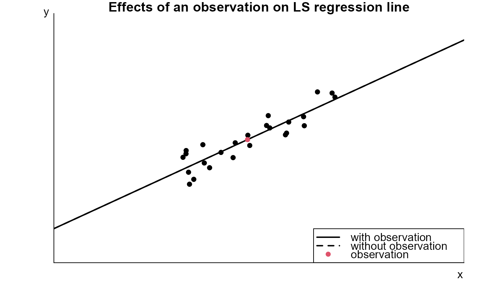
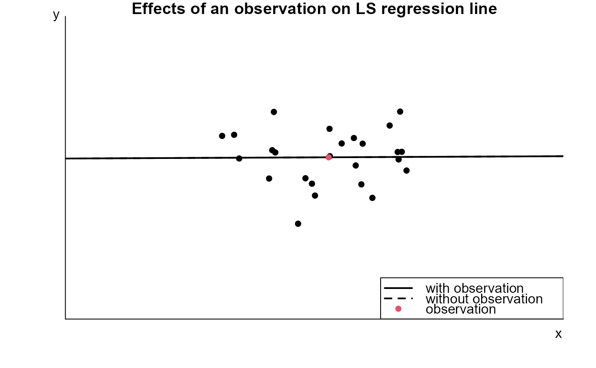

R/leverage_and_influence.R
lev_inf.RdA movie to examine the influence of a single outlying observation on a least squares regression line.
lev_inf(
association = c("positive", "negative", "none"),
n = 25,
panel_plot = TRUE,
hscale = NA,
vscale = hscale
)A character scalar. Determines the type of association between (not-outlying) observations: "positive" for positive linear association; "negative" negative linear association; "none" for no association.
An integer scalar. The size of the sample of (non-outlying) observations.
A logical parameter that determines whether the plot
is placed inside the panel (TRUE) or in the standard graphics
window (FALSE). If the plot is to be placed inside the panel
then the tkrplot library is required.
Numeric scalars. Scaling parameters for the size
of the plot when panel_plot = TRUE. The default values are 1.4 on
Unix platforms and 2 on Windows platforms.
Nothing is returned, only the animation is produced.
n pairs of observations are simulated with the property
that the mean of response variable \(y\) is a linear function of the
values of the explanatory variable \(x\). These pairs of observations
are plotted using filled black circles. An extra observation is plotted
using a filled red circle. Initially this observation is placed in the
middle of the plot.
Superimposed on the plot are two least squares regression lines: one based on all the data ('with observation') and one in which the 'red' observation has been removed ('without observation'). Initially these lines coincide.
The location of the `red' observation can be changed using the +/- buttons so that the effect of the position of this observation on the `with observation' line can be seen.
We see that if the red observation is outlying, that is, it is far from the least squares line fitted to the other observations, then its influence on the least squares regression line depends on its x-coordinate. If its x-coordinate is much larger or smaller than the x-coordinate of the other observations (high leverage) then the influence is higher than if it has a similar x-coordinate to the other observations (low leverage). An observation with high leverage does not necessarily have high influence: if its y-coordinate falls very close to the regression line fitted to the other observations then its influence will be low.
# Positive association
lev_inf()
#> Warning: tkrplot is not available so panel_plot has been set to FALSE.

# No association
lev_inf(association = "none")
#> Warning: tkrplot is not available so panel_plot has been set to FALSE.
